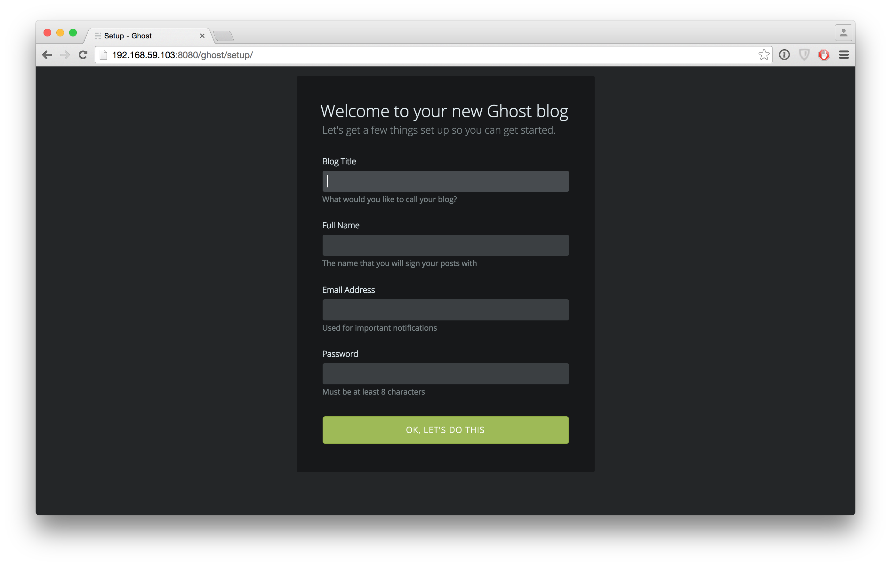

Much like John Willis I love Docker, so when I thought about creating my blog I went looking for a platform that already has a working docker container. A while ago I also discovered Ghost and, what do you know, found a corresponding post on Ghost in Docker.
Using docker for a local Ghost setup
On OSX I use boot2docker so all I needed to do is pull the ghost container:
$ docker pull dockerfile/ghost
Also I wanted to make use of the shared folder capabilities of boot2docker (which uses VirtualBox in the background). So I started the container using the necessary overwrite command:
$ docker run -d -p 80:2368 -v /full/path/to/your/directory:/ghost-override dockerfile/ghost
If you don't know your boot2docker IP, simply type boot2docker IP. Now you can access the local ghost platform at http:///[boot2docker-IP]/ghost. You should see something like this:

After the intial setup you can blog away!
Hosting the blog on Github Pages
Free domain hosting is basically offered by Github Pages. However, we need a way to create static pages and push them to the correct repository. Enter Buster, a brute force static site generator for Ghost.
Buster is very easy to install (just make sure to use a virtual environment so you don't burn in dependency hell):
$ pip install buster
After an initial setup
$ buster setup --gh-repo=https://github.com/[github-username]/[github-username].github.io.git
we can tell Buster to generate the static content for our blog and publish it to Github:
$ buster generate --domain=http://[boot2docker-IP]/
$ buster deploy
Good job! Deployed to Github Pages.
If necessary you can tell Buster that you are using a custom domain name:
$ buster add-domain blog.example.com